KStars SoCiS 2014
SkyGuides: spacelocalized interactive HTML5 multimedia tours for KStars.
An example presentation about the Solar System to show some of the SkyGuides features
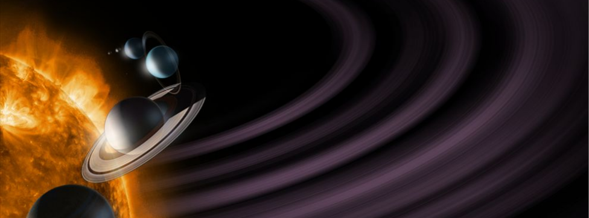
Created by Gioacchino Mazzurco <gio@eigenlab.org>
What is SkyGuides?
SoCis 2014 has permitted the creation of a innovative tool called SkyGuides wich made possible load interactive multimedia tour that will help to pickup some tips for navigating the sky to explore things such as the fascinating science and history of the celestial object they are observing on the sky view.
What is SkyGuides?
Just right click on any celestial object in the sky, if some SkyGuide is available you will see "Show Guides" in the menu
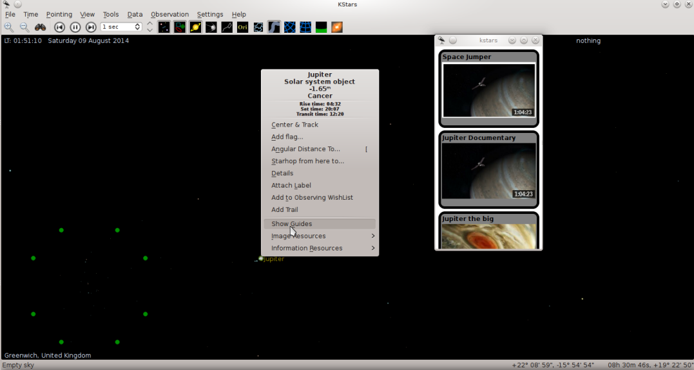
What is SkyGuides?
Then click on the SkyGuide you are interested
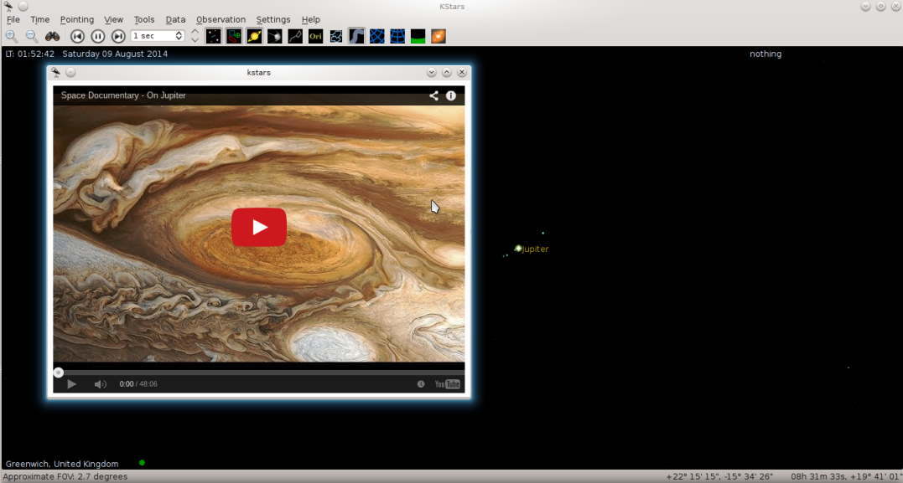
What is SkyGuides?
Throughout this multimedia menu users would discover images, presentations, videos, and anything embeddable in HTML5 to enhance the experience.
SkyGuides also give users the opportunity to create their own multimedia presentation that can be shared in a similar way as custom star catalogs.
To create a new SkyGuide, just create a folder that have inside of it:
title.txt // Contains the title of your Presentation
skyobjects.txt // Celestial objects related to the presentation, one per line
thumbnail.png // Thumbnail image of your Presentation
preferred_size.txt // Preferred size of your presentation es: 800x600
index.html // This is your HTML5 presentation
Then put it inside your ${kstars_data_folder}/guides/yourguide
Some History...
For many thousands of years, humanity, with a few notable exceptions, did not recognize the existence of the Solar System. People believed Earth to be stationary at the centre of the universe and categorically different from the divine or ethereal objects that moved through the sky. Although the Greek philosopher Aristarchus of Samos had speculated on a heliocentric reordering of the cosmos, Nicolaus Copernicus was the first to develop a mathematically predictive heliocentric system.
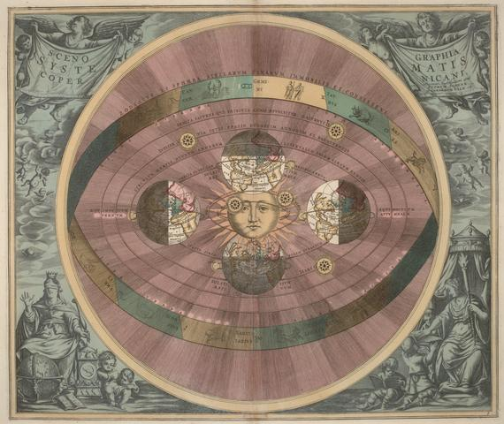
Where is the Solar System?
The Solar System is located in the Milky Way, a barred spiral galaxy with a diameter of about 100,000 light-years containing about 200 billion stars.
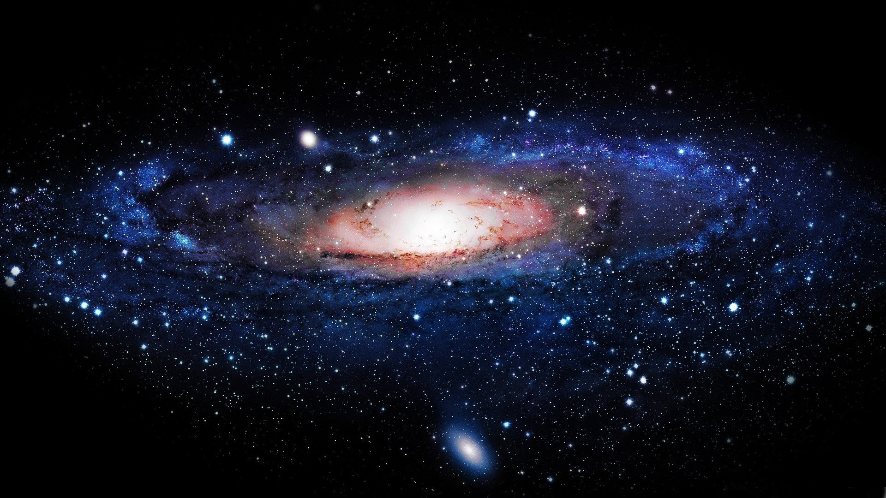
The star at the center of the Solar System
The Sun formed about 4.567 billion years ago from the gravitational collapse of a region within a large molecular cloud is is almost perfectly spherical and consists of hot plasma interwoven with magnetic fields.It accounts for about 99.86% of the total mass of the Solar System.
Introducing a SkyGuides Feature
Click on the Sun then look at the SkyMap
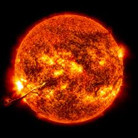
How did you do that?
onclick="window.skymap.setDestinationBySkyObjectName('Sun')"
Inner Planets & Natural Satellites
- Mercury
- Venus
- Earth & Moon
- Mars, Phobos & Deimos
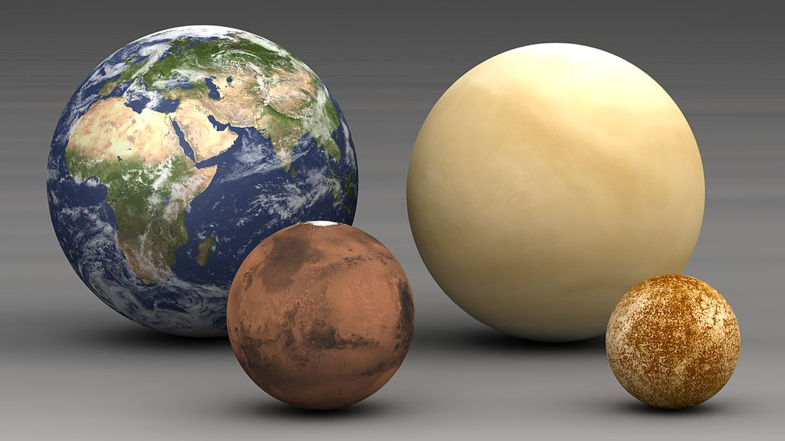
The four inner or terrestrial planets have dense, rocky compositions, few or no moons, and no ring systems.
Mercury
Mercury is the smallest and closest to the Sun of the eight planets in the Solar System, with an orbital period of about 88 Earth days. Seen from Earth, it appears to move around its orbit in about 116 days, which is much faster than any other planet.
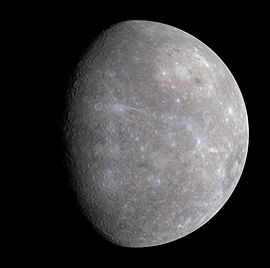
Click in the figure to find it on SkyMap.
Venus
Venus (0.7 AU from the Sun) is close in size to Earth (0.815 Earth masses) and, like Earth, has a thick silicate mantle around an iron core, a substantial atmosphere, and evidence of internal geological activity. It is much drier than Earth, and its atmosphere is ninety times as dense.
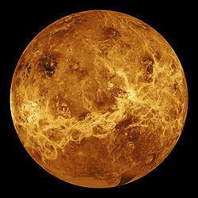
Earth
Earth (1 AU from the Sun) is the largest and densest of the inner planets, the only one known to have current geological activity, and the only place where life is known to exist.
It has one natural satellite, the Moon, the only large satellite of a terrestrial planet in the Solar System.
Mars
Mars (1.5 AU from the Sun) is smaller than Earth and Venus (0.107 Earth masses). It possesses an atmosphere of mostly carbon dioxide with a surface pressure of 6.1 millibars (roughly 0.6% of that of Earth).
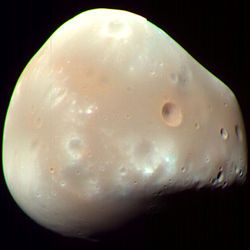
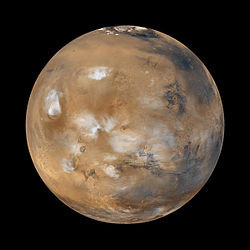
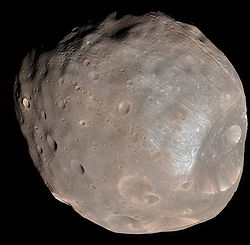
Mars has two tiny natural satellites Deimos and Phobos.
Asteroid belt
Asteroids are small Solar System bodies composed mainly of refractory rocky, metallic minerals and some ice.
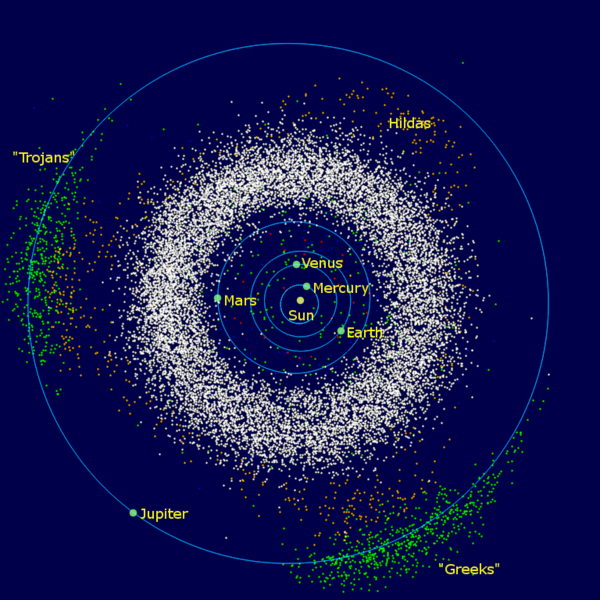
The asteroid belt occupies the orbit between Mars and Jupiter, between 2.3 and 3.3 AU from the Sun. It is thought to be remnants from the Solar System's formation that failed to coalesce because of the gravitational interference of Jupiter.
Ceres
Ceres is the largest asteroid, a protoplanet, and a dwarf planet. Ceres was considered a planet when it was discovered in 1801, and was reclassified to asteroid in the 1850s as further observations revealed additional asteroids.
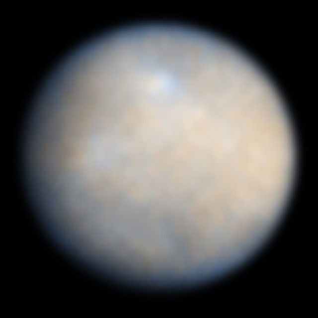
Outer Planets & Natural Satellites
Jupiter, Ganymede & CallistoSaturn, Titan & EnceladusUranus, Titania & OberonNeptune & Triton
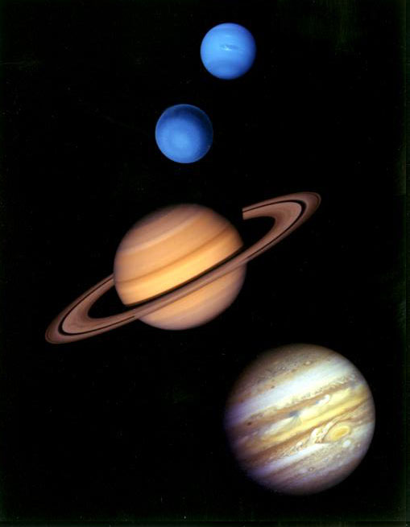
The four outer planets, or gas giants, collectively make up 99% of the mass known to orbit the Sun.
Jupiter
Jupiter (5.2 AU), at 318 Earth masses, is 2.5 times the mass of all the other planets put together. A large group of objects called Trojan asteroids also share the orbit of the planet Jupiter around the Sun.
Jupiter has 67 known satellites. The two largest are Ganymede and Callisto, show similarities to the terrestrial planets, such as volcanism and internal heating. Ganymede is the largest satellite in the Solar System.
Saturn
Saturn (9.5 AU), distinguished by its extensive ring system, has several similarities to Jupiter, such as its atmospheric composition and magnetosphere.
Saturn has 62 confirmed satellites; two of which, Titan and Enceladus, show signs of geological activity, though they are largely made of ice. Titan is the second-largest moon in the Solar System.
Uranus
Uranus (19.2 AU), at 14 Earth masses, is the lightest of the outer planets. Uniquely among the planets, it orbits the Sun on its side; its axial tilt is over ninety degrees to the ecliptic. It has a much colder core than the other gas giants and radiates very little heat into space.
Uranus has 27 known satellites, the two largest are Titania and Oberon
Neptune
Neptune (30 AU), though slightly smaller than Uranus, is more massive (equivalent to 17 Earths) and therefore more dense. It radiates more internal heat, but not as much as Jupiter or Saturn.
Neptune has 14 known satellites. The largest, Triton, is geologically active, with geysers of liquid nitrogen.
Centaurs
The centaurs are icy comet-like bodies whose orbits have semi-major axes greater than Jupiter's (5.5 AU) and less than Neptune's (30 AU). They have unstable orbits that cross or have crossed the orbits of one or more of the giant planets, and have dynamic lifetimes of a few million years. The centaurs are those objects (in orange) that lie generally inwards of the Kuiper belt (in green) and outside the Jupiter Trojans (pink).
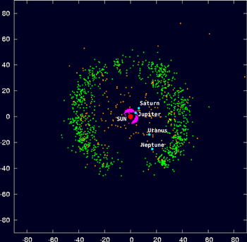
Comet Halley
Comets are small Solar System bodies, typically only a few kilometres across, composed largely of volatile ices.When a comet enters the inner Solar System, its proximity to the Sun causes its icy surface to sublimate and ionise, creating a coma: a long tail of gas and dust often visible to the naked eye. For example, Halley's Comet or Comet Halley, officially designated 1P/Halley, is the best-known of the short-period comets and is visible from Earth every 75–76 years.
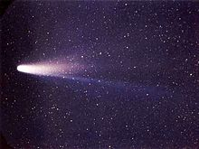
Trans-Neptunian Region
The area beyond Neptune, or the "trans-Neptunian region", is still largely unexplored. It appears to consist overwhelmingly of small worlds (the largest having a diameter only a fifth that of Earth and a mass far smaller than that of the Moon) composed mainly of rock and ice.
Regions beyond Nepture:
- KUIPER BELT: A great ring of debris similar to the asteroid belt, but consisting mainly of objects composed primarily of ice. It extends between 30 and 50 AU from the Sun.
- SCATTERED DISK: Overlaps the Kuiper belt but extends much further outwards, is thought to be the source of short-period comets. Scattered disc objects are believed to have been ejected into erratic orbits by the gravitational influence of Neptune's early outward migration.
Pluto
The dwarf planet Pluto (39 AU average) is the largest known object in the Kuiper belt. When discovered in 1930, it was considered to be the ninth planet; this changed in 2006 with the adoption of a formal definition of planet. Charon, Pluto's largest moon, is sometimes described as part of a binary system with Pluto, as the two bodies orbit a barycentre of gravity above their surfaces.
Eris
Eris (68 AU average) is the largest known scattered disc object, and caused a debate about what constitutes a planet, because it is 25% more massive than Pluto and about the same diameter. It is the most massive of the known dwarf planets. It has one known moon, Dysnomia. Like Pluto, its orbit is highly eccentric.
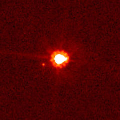
Farthest regions & Future of the Solar System
The point at which the Solar System ends and interstellar space begins is not precisely defined because its outer boundaries are shaped by two separate forces: the solar wind and the Sun's gravity. The outer limit of the solar wind's influence is roughly four times Pluto's distance from the Sun.
All predictions of the future of the Earth, the Solar System and the Universe must account for the second law of thermodynamics, which states that entropy must increase over time. Stars must eventually exhaust their supply of hydrogen fuel and burn out.
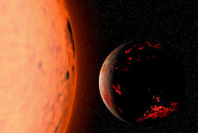
The figure show what the Earth might look like seven billion years from now, after the Sun has entered the red giant phase.